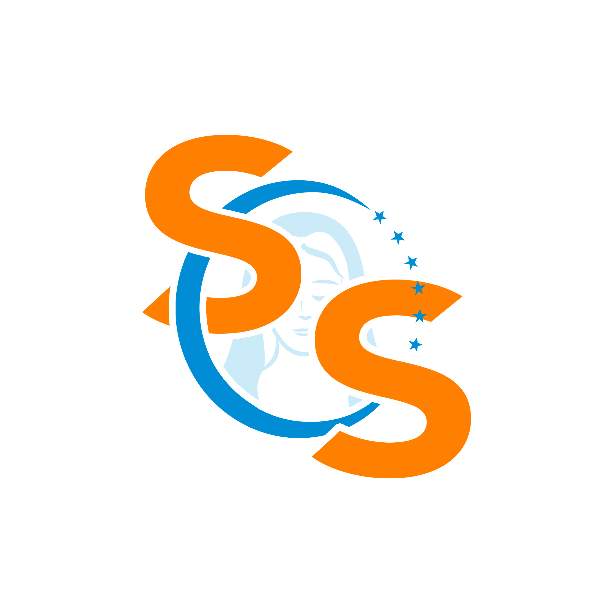

<section class="bloco-sobre-campanha">
  
  <div class = "bloco-texto-sobre-campanha">
    <p class = "texto-sobre-campanha">
      <span class = "texto-personalizado">A Campanha SOS TEMS</span> é destinada para angariar fundos para o
      Templo Espiritual Maria Santíssima. Devido às medidas de restrições
      impostas pelo Governo de São Paulo, em razão da pandemia de Covid-19,
      <strong
        >a Casa de Maria passa por uma situação financeira crítica e precisa de
        ajuda para conseguir pagar as despesas:</strong
      >
    </p>
    <ul class = "lista-despesas">
      <li class = "lista-despesas-opcao">
        <figure>
          
          <figcaption>Aluguel</figcaption>
        </figure>
      </li>
      <li class = "lista-despesas-opcao">
        <figure>
          
          <figcaption>Água</figcaption>
        </figure>
      </li>
      <li class = "lista-despesas-opcao">
        <figure>
          
          <figcaption>Luz</figcaption>
        </figure>
      </li>
      <li class = "lista-despesas-opcao">
        <figure>
          
          <figcaption>Internet</figcaption>
        </figure>
      </li>
    </ul>
    <p class = "texto-sobre-campanha">
      Por isso, estamos aqui unidos em um só ideal para que a Casa se mantenha
      aberta e mais pessoas possam ser ajudadas!
    </p>

    <button class = "botao-ajude-agora">AJUDE AGORA</button>
  </div>
</section>
